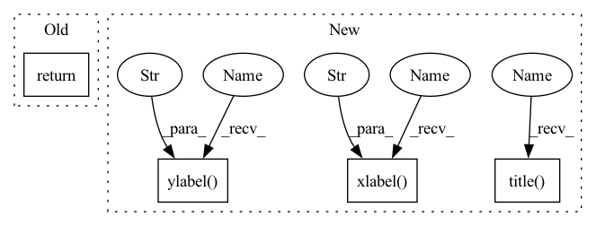

Pattern ID :40357

Before Change
pt += np.array([d_x, d_y])
candidates.append(pt)
return np.unique(np.asarray(candidates), axis=0)
@staticmethod
def get_candidate_gt(target_candidate, gt_target):
After Change
for centerline_coords in centerline_list:
visualize_centerline(centerline_coords)
plt.scatter(candidates[:, 0], candidates[:, 1], marker="*", c="g", alpha=1, s=6.0, zorder=15)
plt.xlabel("Map X")
plt.ylabel("Map Y")
plt.axis("off")
plt.title("No. of lane candidates = {}; No. of target candidates = {};".format(len(centerline_list), len(candidates)))
plt.show(block=False)
return candidates
In pattern: SUPERPATTERN
Frequency: 3
Non-data size: 4
Instances
Fragment ID: 114524555
Project Name: henry1iu/tnt-trajectory-predition
Commit Name: 158b8908496b1bcd8d780c31b641d395ef261a2f
Time: 2021-07-28
Author: liu.jb.henry@gmail.com
File Name: core/util/preprocessor/base.py
M Class Name: Preprocessor
N Class Name: Preprocessor
M Method Name: lane_candidate_sampling(3)
N Method Name: lane_candidate_sampling(2)
M Parent Class: object
N Parent Class: object
M File Name: core/util/preprocessor/base.py
N File Name: core/util/preprocessor/base.py
M Start Line: 139
M End Line: 158
N Start Line: 138
N End Line: 174
'>
Before Change
table = wandb.Table(data=data, columns = ["tsne_x", "tsne_y","name"])
wandb_scatter_plot = wandb.plot.scatter(table, "tsne_x", "tsne_y", title=plot_title)
// wandb.log({"tsne evaluation" : wandb.plot.scatter(table, "tsne_x", "tsne_y", title="t-SNE evaluation")})
return wandb_scatter_plot
After Change
def generate_scatter(tsne_results, df_feature_vector_info, save_image, output_dir, save_wandb, plot_title):
plt.figure(figsize=(10, 10))
plt.title(plot_title)
plt.xlabel("tsne_x")
plt.ylabel("tsne_y")
sns.scatterplot(x=tsne_results[:,0], y=tsne_results[:,1], hue=df_feature_vector_info["name"], legend="full", alpha=0.8)
if save_image:
plt.savefig(os.path.join(output_dir, plot_title+"_scatter_plot.png"))
'>
Fragment ID: 114524557
Project Name: iamigos/avatar-image-generator
Commit Name: 8003347429b29cdc8e67517f0a5d972bca48d54d
Time: 2022-02-18
Author: daniel.ibanez@pucp.edu.pe
File Name: evaluation/utils_tsne.py
M Class Name: AnonimousClass
N Class Name: AnonimousClass
M Method Name: generate_scatter(6)
N Method Name: generate_scatter(6)
M Parent Class:
N Parent Class:
M File Name: evaluation/utils_tsne.py
N File Name: evaluation/utils_tsne.py
M Start Line: 24
M End Line: 34
N Start Line: 27
N End Line: 49
'>
Before Change
pt += np.array([d_x, d_y])
candidates.append(pt)
return np.unique(np.asarray(candidates), axis=0)
@staticmethod
def get_candidate_gt(target_candidate, gt_target):
After Change
for centerline_coords in centerline_list:
visualize_centerline(centerline_coords)
plt.scatter(candidates[:, 0], candidates[:, 1], marker="*", c="g", alpha=1, s=6.0, zorder=15)
plt.xlabel("Map X")
plt.ylabel("Map Y")
plt.axis("off")
plt.title("No. of lane candidates = {}; No. of target candidates = {};".format(len(centerline_list), len(candidates)))
plt.show(block=False)
return candidates
'>
Fragment ID: 114524556
Project Name: henry1iu/tnt-trajectory-prediction
Commit Name: 158b8908496b1bcd8d780c31b641d395ef261a2f
Time: 2021-07-28
Author: liu.jb.henry@gmail.com
File Name: core/util/preprocessor/base.py
M Class Name: Preprocessor
N Class Name: Preprocessor
M Method Name: lane_candidate_sampling(3)
N Method Name: lane_candidate_sampling(2)
M Parent Class: object
N Parent Class: object
M File Name: core/util/preprocessor/base.py
N File Name: core/util/preprocessor/base.py
M Start Line: 139
M End Line: 158
N Start Line: 138
N End Line: 174